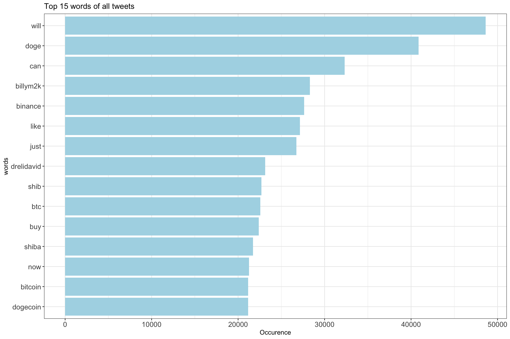
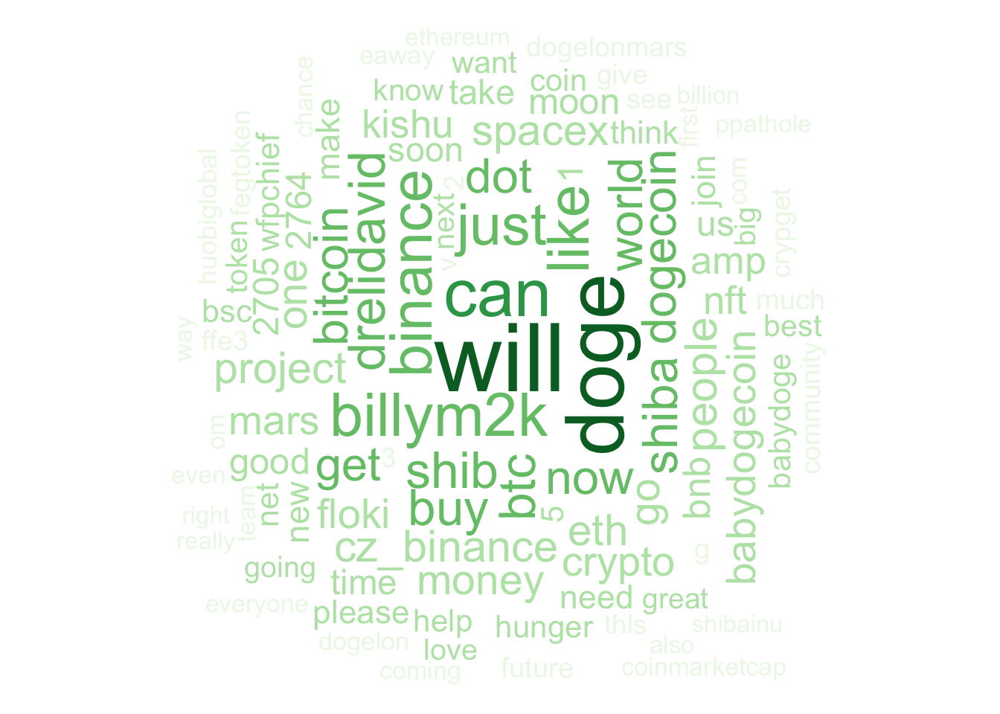
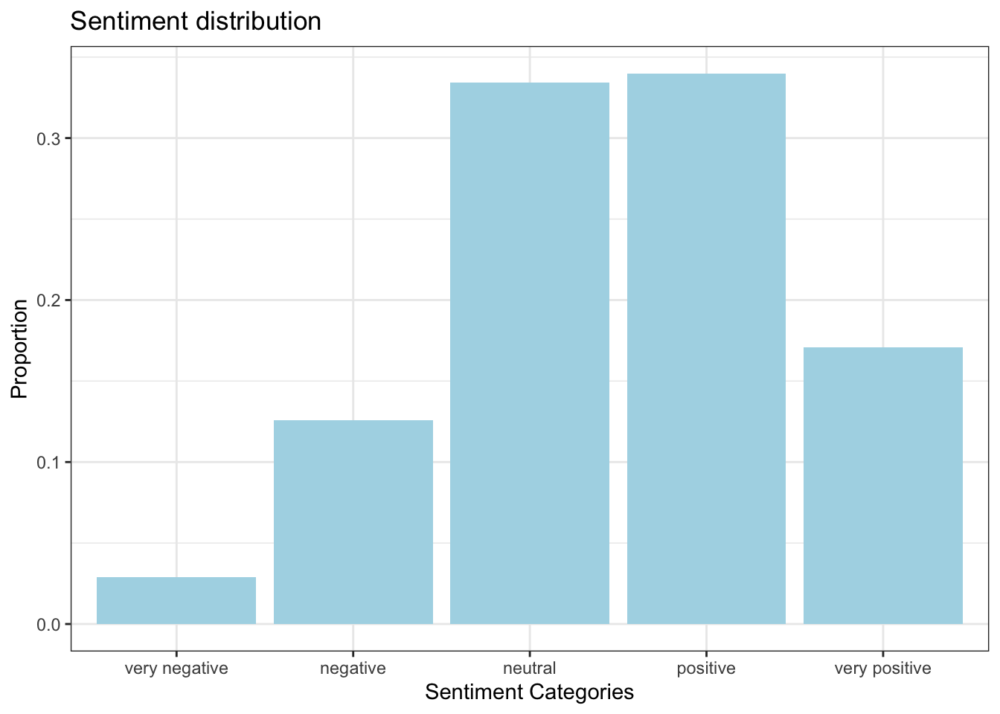
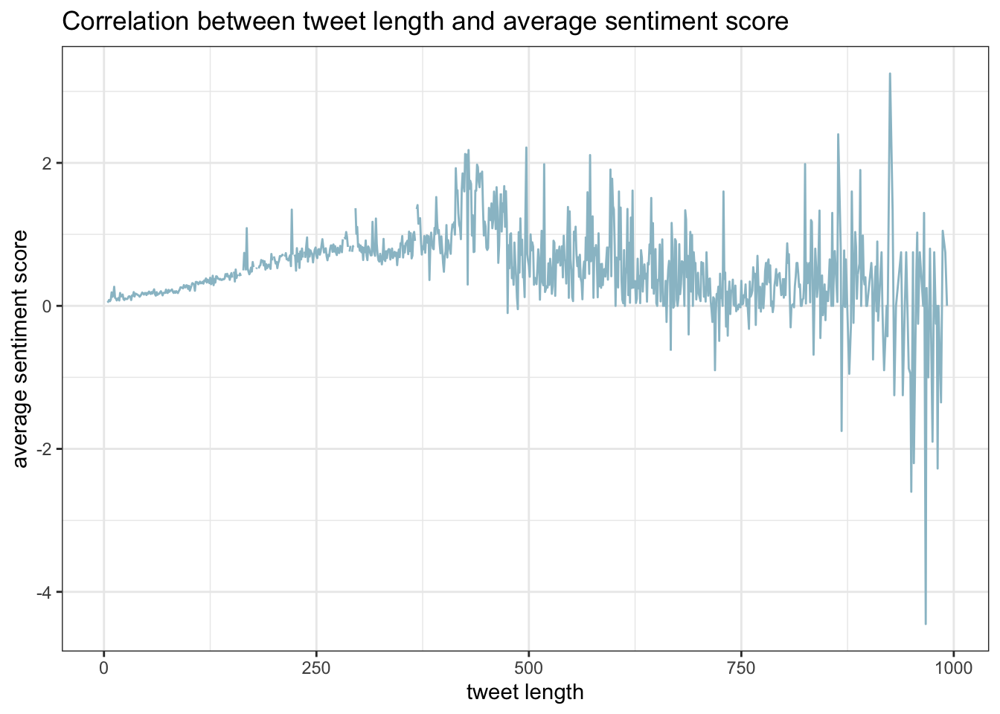
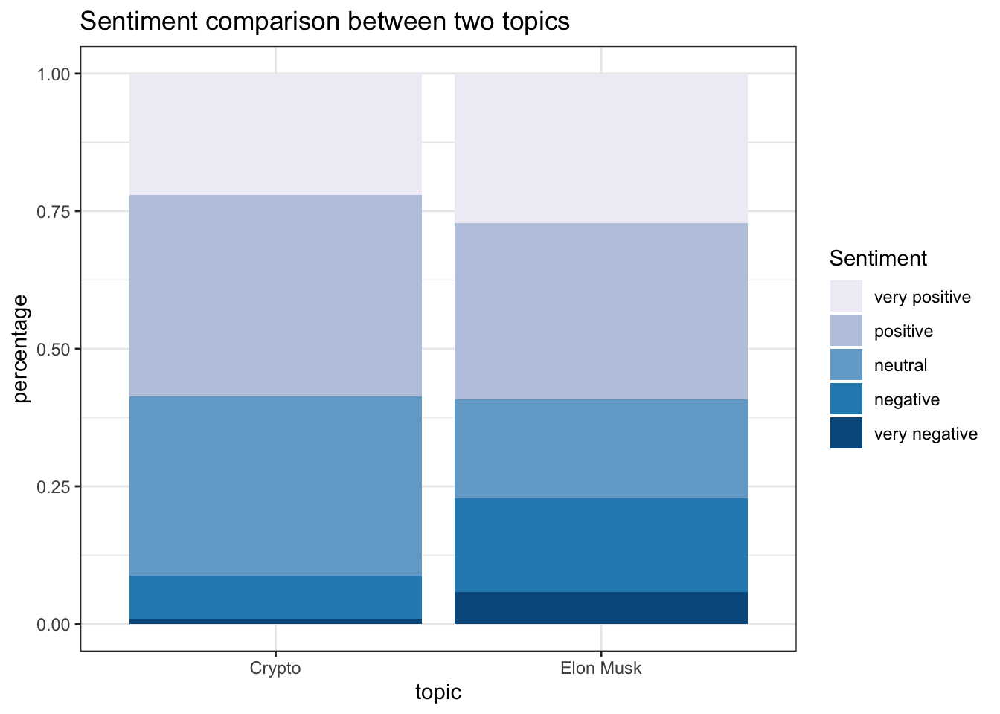

Chapter 5 Results
5.1 Elon Musk
Elon Musk is very active on twitter and anything he tweets can be very influential and brings a lot of controversies. For example, his tweet about the crypto-currency “dogecoin” caused “dogecoin” price to spike. Since Twitter users have many discussions surrounding him, our analysis aims to visualize those discussions.
The period of which we collected our data was very interesting. It was shortly after Tesla flied in stock market and Elon Musk became the richest man in the world. He was also asked by the United Nation to donate 4% of his growing wealth to solve a hunger crisis. Just shortly after that, on Nov. 1st, he posted a Chinese poem “七步诗” titled as “Humankind”, which seems to be describing dogecoin and shiba inu coin.

5.2 Volume of tweets
We first carried out analysis on the number of tweets that we collected each day. Due to some technical issues, the durations we collected tweets each day are different. They were about 10-12 hours each day, with one excepetion on Oct 29. On that day, we collected tweets for about 5.5 hours. In order to present a consistent results through the period, we standardize the tweets by dividing the total collected hour and multiplying by 24. The following graph presents expected number of tweets each day.

From the graph, we see that the volume each day can be as low as 70 thousands and as high as 250 thousands. There were two peaks on Oct. 29th and Nov 1st. For the first peak, we corresponded it to the drastic increase in Tesla’s stock price. For the second peak, we related to the conversation between an United Nation offical and Elon Musk. We notice from below that this conversation has 337.5 thousand likes, showing its tremendous volume of attention. Observing these patterns, we conclude that controversial events associated with Elon Musk will cause an increase in discussion on Twitter.
5.3 Geological Distribution
Even though we have limited data on geological information of users, we still want to make use of them to explore some patterns. In total we have 5293 tweets that contain a user geological information. The location is not limited to the United States, and we conducted filtering for each states.
From the state graph, we can see that users mainly locate in four states. They are California, Texas, Florida, and New York, with 503, 336, 248, and 187 users respectively. Even though we have a fairly small sample, it still seems that users in more economically developed state tend to discuss more related to Elon Musk.
5.4 Tweet Contents
Now, our analysis dive into the tweet-level. We are concerned with the contents of the tweets. Even though it is impossible for us to examine tweet by tweet, we use powerful Natural Language Processing techniques to explore patterns.
5.4.1 Word Frequency
We first look at some most frequent words that appear across tweets. By inspecting the word frequency histogram and the word cloud, we can have some insight about what people were discussing inside these tweets.

We can see that in the frequency graph that most of the words are related to crypto-currency. The word “will” and “can” have the most frequency. In relating to the topic of crypto-currency, we hypothesis the pattern to be Twitter users love to envision the future of crypto-currency and use “will” and “can” to express their expectations.

The word cloud presents more words of high frequency. The words “doge”, “billym2k” and “dogecoin” are in the top 15 words list, and they are describing the same object-dogecoin. Dogecoin is a cryptocurrency that are created as a “joke” to make fun of the fact that everyone can copy bitcoin’s open source code and publish a new cryptocurrency. Elon Musk is a big supporter for dogecoin, calling it “people’s crypto.” It is also unsurprising that these the words like “bitcoin”, “binance” and “crypto” are frequent in the tweets since Elon Musk is a big fan of bitcoin.
The username “DrEliDavid” and the word “hunger” also appeared a lot. The story began in Oct. 30th when Dr. Eli David shared an image of a CNN Business article with the headline: “2% of Elon Musk’s wealth could solve world hunger, says director of UN food scarcity organization.” Elon Musk tweeted that he would sell Tesla stock if WFP can prove how his 6 billion dollar can solve world hunger. There were lots of online dialogue between the two sides since Musk’s request for spending to be published. We can also see “spaceX” and “mars” as referring to his project of sending human to Mars. However,we can clearly these topics have less popularity.
Another interesting finding is the use of emojis. The following is a table of top 5 emojis frequency.
| emoji | count |
|---|---|
| üöÄ | 140653 |
| üî• | 62526 |
| ü§û | 24853 |
| üíé | 23728 |
| üòÑ | 18558 |
It is very interesting that ‚Äúrocket‚Äù appears to be the most frequent emoji. We are unsure if it is responding to the spaceX project, or if it is expectation on the price of crypto-currceny: ‚ÄúTo the moon üöÄ‚Äù.
5.4.2 Tweet sentiment
Moving forward, we look at the sentiment of tweets and how the sentiment correlates with other features in our dataset. Previously, we have assigned a sentiment score for each tweet based on the usage of words and classify them into categories. In this section, we expand sentiment classification as follows: very positive(>1.2),positive(0.2,1.2],neutral[-0.2,0.2], negative[-1.2,-0.2), and very negative(<-1.2) in order to create more insightful observations.

From the graph, we can see that the overall sentiment is very positive. Over 85% of the tweets are either neutral or positive. Neutral and positive tweets have similar percentage of 33%. Elon Musk presents to be very unorthdodox on Twitter, and other users seems to identify with his style.
We then explore some correlations between sentiment scores and other features. Firstly we look at if the length of tweets would have some impacts on the sentiment.

We can see a clear trend of increasing average sentiment as the tweet length grows. At around tweet length of 400, we see a pattern of slight decrease in average sentiment towards 0. We conclude that users are more likely to express positive emotions regarding Elon Musk as the tweet length increases. However, for tweets that are excessively long, the emotion tends to be more neutral and even negative.
We then try to explore if there is a relationship between sentiment and number of followers.
We can see that it is a fan shaped graph. The average sentiment score for average Twitter user is generally flat and does not have much fluctuation. However, for people who are more influential (more followers), their attitudes seems to vary. We conclude that while average Twitter users are generally favorable of Elon Musk, more influential users can have varying opinions towards Elon Musk.
5.4.3 Monitoring Topics
After the exploration of words and sentiments, we want to further find out how those high frequencey vocabulary are related. To to this, we apply topic modeling(LDA). LDA is an unsupervised generative probabilistic model which, typically given the number of topics, allocates each word in a document to a specific topic. Click here to see an interactive LDA result in which we select 6 topics. There is a detail description on how to read the graph in the page.
From the result, we roughly extract two topics. The first and second topic in the graph overlap. Based on the keywords “tesla”, “world”, “hunger”,and “stock”, we think this is a general topic regarding the spike of Tesla stock and the conversation between Elon Musk and United Nation offical. The third, fourth, and fifth topics are close in distance. We see various crypto-currency keywords like “bitcoin”, “binance”, “eth”, etc.. Those topics are discussions focusing on crypto-currencies. For the sixth topic, even though it is far away from other topics, we still think it talks about crpypto currencies. We see keywords “buy”, “hold”, and “kishu”. Therefore, we capture two topics corresponding to the content of Elon Musk’s tweets. The first topic about Tesla and United Nation’s proposal constitute about 53% of all the discussions. The second topic about crypto-currency makes up about 47% all the discussion.
Identifying these two topics, we filtered out tweets using keywords belonging to the categories. The sentiment comparision between the two topics is shown below. As “Crypto” is straightforward, “Elon Musk” refers to the combined topic of Tesla stock and the hunger crisis event. 
From the graph we can see that sentiment on “Crypto” is exceedingly more positive than topic “Elon Musk”. Topic “Elon Musk” has about 24% of negative sentiments while “Crypto” has only about 10%. We conclude that people are more favoring Elon Musk’s role in the crypto currency field.